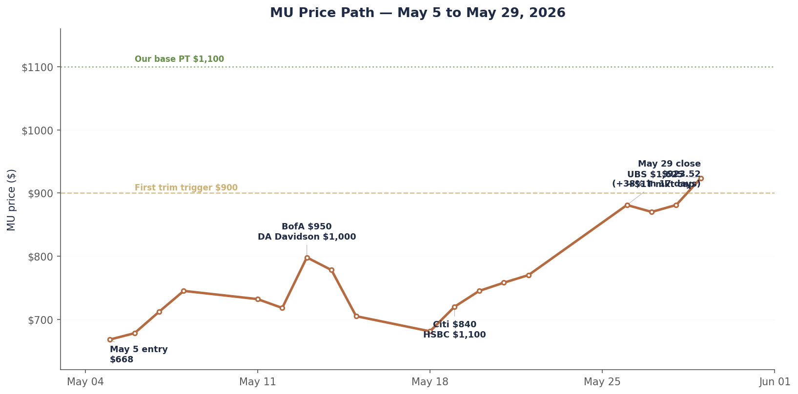
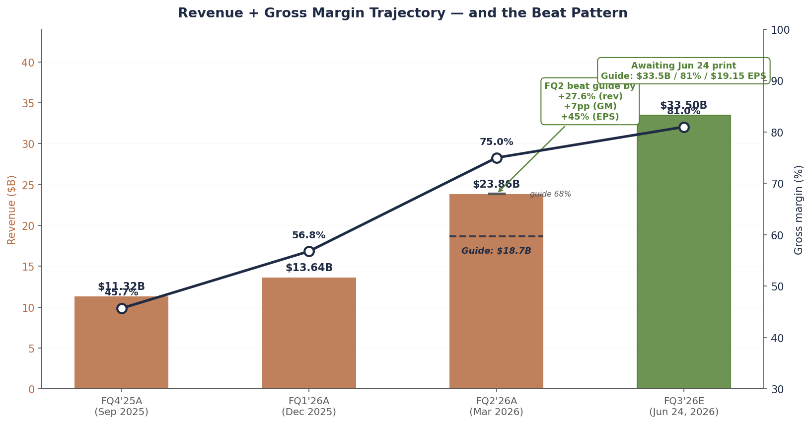
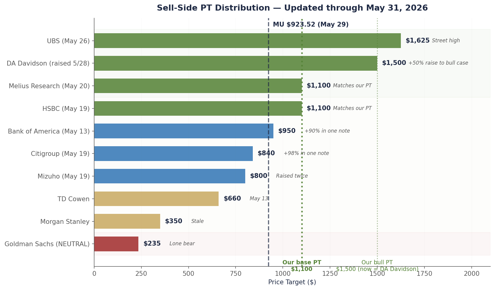

Single-name update · Memory · June 2026 outlook
June is when Micron has to do the work.
For most of May, Micron was a story about sell-side capitulation. Nine analyst actions across eight banks in three weeks. UBS tripling its price target to a Street-high $1,625. The stock running from $668 to $923.52 — up 38% in 17 trading days. By Friday I’d already hit my first trim level.
June stops being about narrative. FQ3 prints Wednesday June 24, after the close. Management guided $33.5B in revenue, 81% gross margin, and $19.15 in non-GAAP EPS. That’s the bar a $1 trillion market cap has to clear. The number that decides whether the rally is the start of something or the end of something.
What makes this print especially interesting: the last two quarters, MU has beaten its own guide by historically large margins. FQ2 was a 28% revenue beat and 45% EPS beat over what management told the Street to expect three months earlier. If even half of that pattern holds, FQ3 prints somewhere between “clear beat” and “blowout.” PT stays at $1,100. Next trim still at $1,100. The framework gets tested by an actual income statement instead of an analyst’s spreadsheet.
Chart 1 — What 17 trading days look like
$668 to $923.52, with seven sell-side raises along the way. The first trim trigger fired on the last bar.

Five-week round trip from contrarian conviction to consensus stampede. Source: closing prices via Yahoo Finance; sell-side notes via Bloomberg / firm disclosures.
Why June stops being a sell-side story
Through May, the move was driven by analysts catching up to math that was already on the page. DRAM contract prices had moved 90–95% in a single quarter. Hyperscaler capex guides were the largest in the history of the industry. Micron itself had already printed 75% gross margin in FQ2. The estimates had to come up. Analysts came around to it in sequence. The stock came around to it in compressed time.
That’s a story that runs out. There are only so many banks left to capitulate, and the ones who haven’t yet (Goldman at $235 NEUTRAL, Morgan Stanley at a stale $350) are increasingly looking like the contrarians. When everyone above a thousand becomes consensus, the next leg has to come from somewhere other than sell-side mathematics.
It has to come from company numbers. From the actual income statement. From forward guidance. From management saying out loud what the spreadsheets have been implying.
The cleanest test arrives on Wednesday June 24, after the close. Micron reports fiscal Q3 2026 (the quarter ending May). It’s the first earnings print since the whole memory complex re-priced. Every number management gives is going to be measured against the run-up — not against last quarter, not against last year, but against the $1 trillion the market has now decided the company is worth.
The bar Micron has to clear
Here’s what management guided when they reported FQ2 on March 18, 2026. Coming off a quarter that printed $23.86B in revenue at 75% non-GAAP gross margin and $12.20 in EPS, the company told the Street to expect this:
| Line | FQ3'26 guide | vs FQ2'26 actual | vs FQ1'26 (two quarters ago) |
|---|---|---|---|
| Revenue | $33.5B ± $0.75B | +40% QoQ from $23.86B | +146% from $13.64B |
| Gross margin | ~81% | +600bp from 75% | +2,420bp from 56.8% |
| Non-GAAP EPS | $19.15 ± $0.40 | +57% from $12.20 | +roughly 4× from $4.78 |
| OpEx | ~$1.4B | roughly flat | +slight |
Numbers like those are difficult to internalize. A quarterly revenue figure that, alone, exceeds what Micron earned across all of fiscal 2023. A non-GAAP gross margin profile that puts a memory company in the same neighborhood as software. EPS of $19 in a single quarter — the company’s share-price valuation in 2018 was below $40.
What anchors the stock at $923 isn’t that bar by itself. It’s the question of whether management is sandbagging again. The last two quarters they did:
Chart 2 — Revenue, gross margin, and the beat pattern
The last verified quarter beat its guide by 28% on revenue and 7pp on margin. June 24 tells us if that pattern holds.

Bars are actual revenue; the dashed line in the FQ2 bar shows where management originally guided when reporting FQ1. The 7pp GM beat on FQ2 is what produced the EPS surprise of $12.20 vs $8.42 guide. Source: Micron 8-K filings (FY25 Q4, FY26 Q1 and Q2 press releases), company guidance.
Two quarters of evidence is a pattern, not a guarantee. But it’s also the strongest possible signal we have about management’s posture: in this cycle, they’ve been conservative every single time. The right question isn’t whether $33.5B/$19.15 prints. It’s how far above those numbers it prints, and whether that’s already in the stock at $923.
What I’m actually watching on the print
The headline beat is almost ceremonial at this point. Three out of the last four quarters Micron has beaten the top of the range. The pricing data through May suggests they should again. The interesting reads aren’t whether they beat — it’s how, and what comes after.
One. Gross margin trajectory. 81% is a number that doesn’t sit comfortably in a memory company’s P&L. If they print 82–83%, the bull thesis (memory has structurally rerated, AI is permanent demand) gets actual fundamental support. If they print 79–80%, the bear thesis (this is peak; mix and ASP are already rolling) gets its first echo. The range matters more than the point.
Two. Forward guide for FQ4 and color on FY27. The Street is modeling FQ4 above the FQ3 guide. Anything that anchors FY27 EPS at or above $80 (against the $100 we’ve been using) keeps the trim ladder running. Anything that walks back FY27 commentary — even tonally — is the cycle-end signal we’ve been calibrated for since April.
Three. HBM3E ASP commentary. TrendForce flagged this in April: any 5%+ sequential decline in HBM3E contract pricing would compress margins meaningfully. If management strikes a defensive tone on HBM pricing for the second half — that’s the first place a cycle starts to roll. I will be re-reading the prepared remarks specifically for this line.
Four. Capex. Samsung’s $73B 2026 capex is the largest single-year semi spend in history. Micron’s response is the cleanest read on whether management thinks the pricing environment is durable. A capex guide that ramps Idaho aggressively into FY28 reads as confidence. A capex guide that throttles back reads as discipline — or fear.
The scenario tree (not a point prediction)
The honest answer to “what do you think prints” is that the range of defensible outcomes is wide enough that pretending I know the number is a tell. Here’s what I actually think the matrix looks like, given verified contract pricing data, the FQ2 beat pattern, and what management was hinting at on the last call:
| Scenario | Revenue | GM | Implied EPS | What it means |
|---|---|---|---|---|
| Guide in line | $33.5B | 81% | ~$19.15 | Management called it perfectly. First time this cycle. Stock probably fades 3–5% on perceived lack of upside. |
| Modest beat (base case) | $34–35B | 82–83% | $20–22 | Most likely outcome. Beats consensus but not by enough to re-rate. Stock holds $900–1,000 range. |
| Big beat (FQ2 pattern repeats) | $36–38B | 83–85% | $23–26 | Validates the cycle-extension thesis. Stock breaks $1,000 the next morning. My second trim at $1,100 fires within days. |
| Negative surprise | <$32.5B | <79% | <$18 | HBM ASP softness or a cost miss. Cycle-end signal. Stock to $800–850. I exit a second tranche regardless of price. |
The reason I’m not putting a point estimate on this: I genuinely don’t know which of those four lands. The base case is most likely (maybe 50%), the big beat is the second-most-likely (25%), guide-in-line is third (20%), and the negative surprise is the tail (5%). But those probabilities are based on pattern recognition, not on proprietary channel checks.
What I’m more confident about: the forward commentary on FQ4 and FY27 matters more than the print itself. UBS’s $1,625 PT requires roughly $100+ in FY27 EPS. DA Davidson’s $1,500 is similar. If management gives any tonal signal that walks those numbers down, the stock cracks regardless of how good the in-quarter beat looks. If management leans into FY27 the way they leaned into FQ3 last quarter, the rally has another leg.
The stock reaction is mostly a function of how stretched current consensus already is. Sell-side estimates for FY27 EPS have moved from $73 in early May to roughly $90–95 today based on the PT raises. If the call validates $100+, those PTs hold. If it validates $80–85, the higher PTs start looking aspirational.
The June calendar (in one screen)
For context, three discrete things move the tape this month other than MU itself:
| Date | Event | Why it matters for MU |
|---|---|---|
| Jun 11 | May CPI release (8:30 ET) | If core CPI prints sticky again, the post-PCE 10Y selloff continues. Discount rate is one of the few things that can stall an AI-led tape. |
| Jun 17–18 | FOMC meeting + SEP | The dot plot matters more than the decision. If 2026 median dots remove a cut, multiple compression starts in semis first. |
| Jun 24 (after close) | MU FQ3 earnings | The print and the call. The single highest-information event of June for this position. |
| Jun 24–25 | SK Hynix HBM4 production milestone (expected) | Hynix is targeting initial HBM4 sampling. Any slip or pull-forward changes the supply-side narrative. |
| Jun 27 | May PCE release | Anchors the second-half-of-the-year rate path. Less binary than CPI but more weight in Fed model. |
What jumps out is that MU’s print lands a week after FOMC. By the time we hear from Mehrotra, the rates picture for the rest of the year is set. The market will know whether we’re in “dovish hold” or “hawkish pause” before the most important AI-cycle data point of Q2 hits the tape. That sequencing is unusually clean.
Where the sell-side actually stands today
Three changes since the May 28 piece. DA Davidson raised PT from $1,000 to $1,500 (May 28 — now sits exactly on our bull case). Goldman’s macro team hiked their S&P 500 target to 8,000 and named Micron and NVIDIA as accounting for roughly a third of 2026 index EPS growth — without changing Goldman’s own NEUTRAL rating on MU. Mizuho and BofA both reiterated post-UBS without raising further.
Chart 3 — Sell-side PT distribution, updated through May 31
Six of ten analysts now sit at or above our base PT. Two are at or above our bull case.

Goldman alone in red below current. UBS, DA Davidson, HSBC, and Melius now above or at our PT. Source: bank notes via Bloomberg, firm disclosures.
The cross-confirmation read — Goldman’s macro desk endorsing the MU earnings thesis while Goldman’s single-stock desk stays NEUTRAL — is exactly the kind of internal dissonance that resolves loudly when someone capitulates. I’d watch for a Goldman PT raise sometime in the next four weeks.
Position update and what fires next
I trimmed one-third on Friday May 29 at an average fill of $919, moving the position from roughly 6% of book down to 4%. Cost basis on the remaining two-thirds is unchanged. The trim ladder continues:
| Trigger | Action | Where we are |
|---|---|---|
| Fired 5/29 at $923.52 (avg fill $919). Position now ~4% of book. | ||
| $1,100 | Second trim (another third) | 19% above current. Next rung. Could fire in the days after the FQ3 print on a clean beat. |
| $1,400 | Third trim (another third) | 52% above current. Requires the “memory is software” narrative to genuinely break through. |
| $1,500+ | Full exit, or any kill-shot | 62% above current. UBS’s ladder, DA Davidson’s ladder. Where we step off. |
The framework keeps doing its job. The first trim was mechanical — the trigger fired, I sold, no decision required. That’s the point of pre-committing. The hardest part of this trade was always going to be selling into strength while the narrative still felt durable. The ladder makes that decision in advance, so the in-moment version of me doesn’t have to be strong-willed about it.
Three things would change the plan before the next rung:
A clean miss on FQ3 revenue or guide. Stock back to $800–850 range. I hold the remaining position; the thesis is intact at lower multiples and the cycle just got a little longer. No additional buying — we already own enough.
HBM3E pricing softness in the call. This is the kill-shot I’ve been calibrated for. If management language goes defensive on HBM ASPs for second-half FY26, I exit a second tranche immediately on the call regardless of stock price.
Hyperscaler capex revision downward. Watch the FY27 capex guides as MSFT/GOOG/META report in July. Any meaningful cut from the current $745B aggregate is the leading indicator that supply > demand by 2028 starts pulling forward.
None of those have happened. Most of them probably won’t. The base case is that June is a confirmation month, the print is good, and the discipline plays out the way it’s designed to. But the framework only works if I’m as willing to fire it on bad news as I was on good.
I’ll write the follow-up the morning of June 25.
One-page summary
| Item | Status |
|---|---|
| Rating | BUY (with trim discipline) |
| Last close | $923.52 (May 29, 2026) |
| 12-month base PT | $1,100 (unchanged) |
| Bull case PT | $1,500 (now matches DA Davidson) |
| Bear case PT | $280 (cycle-end scenario) |
| Position size | ~4% of book (post-trim) |
| Next decision date | Wed, June 24 after close — MU FQ3 print |
| Next trim trigger | $1,100 (19% above current) |
| Kill-shot triggers | HBM3E ASP softness in call; FY27 walk-back; hyperscaler capex cut |
| FQ3 guide (the bar) | $33.5B rev / 81% GM / $19.15 EPS |
| My FQ3 base case (50% prob) | $34–35B rev / 82–83% GM / $20–22 EPS |
| FQ3 upside case (25% prob) | $36–38B rev / 83–85% GM / $23–26 EPS (FQ2 pattern) |
| FQ3 downside case (5% prob) | <$32.5B rev / <79% GM / <$18 EPS (kill-shot) |
Disclosure: I/we have a beneficial long position in the shares of MU either through stock ownership, options, or other derivatives. Position was reduced by approximately one-third on May 29, 2026 per the published trim ladder. I wrote this article myself, and it expresses my own opinions. I am not receiving compensation for it. I have no business relationship with any company whose stock is mentioned in this article. This is research and analysis only, not personalized financial advice. This commentary is for informational and educational purposes only and does not constitute investment, tax, or legal advice or a solicitation to buy or sell any security. Past performance is not indicative of future results. Readers should conduct their own research and consult a qualified financial professional before making investment decisions. Sources include Micron IR disclosures and 8-K filings, sell-side notes (UBS, BofA, HSBC, Melius Research, DA Davidson, Citigroup, Mizuho, TD Cowen, Morgan Stanley, Goldman Sachs), TrendForce DRAM contract pricing reports, Counterpoint Research HBM share data, hyperscaler Q1 2026 earnings transcripts, Korean Ministry of Trade export statistics, and Bloomberg consensus data. See disclaimer.